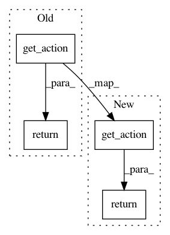

ca070637fdd0292822eda0f43657c27ed8827c47,tensorforce/agents/dqfd_agent.py,DQFDAgent,get_action,#DQFDAgent#,134
Before Change
:param state:
action = self.model.get_action(*args, **kwargs)
return action
def save_model(self, path):
self.model.save_model(path)
After Change
self.model.update_target_network()
def get_action(self, *args, **kwargs):
return self.model.get_action(*args, **kwargs)
def save_model(self, path):
self.model.save_model(path)
In pattern: SUPERPATTERN
Frequency: 3
Non-data size: 4
Instances
Project Name: reinforceio/tensorforce
Commit Name: ca070637fdd0292822eda0f43657c27ed8827c47
Time: 2017-04-29
Author: mi.schaarschmidt@gmail.com
File Name: tensorforce/agents/dqfd_agent.py
Class Name: DQFDAgent
Method Name: get_action
Project Name: flow-project/flow
Commit Name: 11aecadfacf1c4e95fac567afd007e2135f2c86b
Time: 2017-02-27
Author: eugenevinitsky@calvisitor-10-105-138-180.calvisitor.1918.berkeley.edu
File Name: cistar-dev/cistar/controllers/base_controller.py
Class Name: BaseController
Method Name: safe_action
Project Name: flow-project/flow
Commit Name: a767813b1aae7c7b4ba59b88c2dc9beab1e8c1ba
Time: 2017-03-07
Author: eugenevinitsky@calvisitor-10-105-138-180.calvisitor.1918.berkeley.edu
File Name: cistar-dev/cistar/controllers/base_controller.py
Class Name: BaseController
Method Name: safe_action